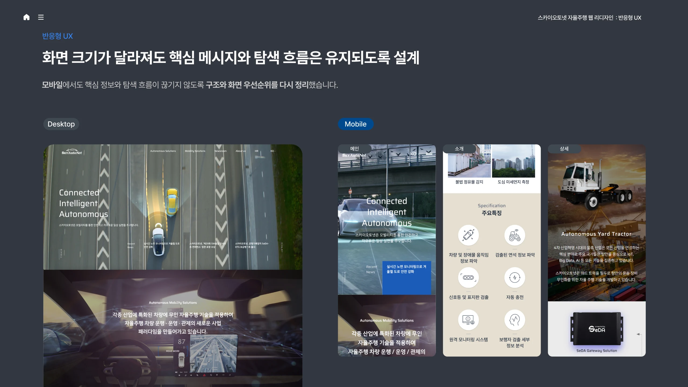
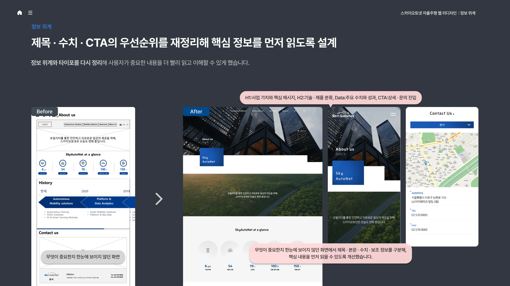

02 설계 과제
첫 화면에서 사업 분야와 기술 적용 장면을 함께 소개하도록 구성했습니다.
01
사업 소개
첫 화면에서 핵심 사업과 기술 적용 장면을 함께 보여주는 것을 과제로 삼았습니다.
02
정보 우선순위
제목·주요 정보·상세 페이지 진입 순서를 정리했습니다.
03
모바일 구성
데스크톱의 주요 콘텐츠를 모바일에서도 읽을 수 있도록 재배치했습니다.
PROJECT 05 · WEB UX · BRAND UX · RESPONSIVE
자율주행 기술 소개를 적용 장면과 상세 정보로 연결하는 반응형 UI를 디자인하고 퍼블리싱에 참여했습니다. 모바일 화면은 메인 → 적용 사례·주요 특징 → 솔루션 상세 순으로 배치했습니다.
"기술 적용 장면과 목적별 탐색 구조 연결"

CASE AT A GLANCE
핵심 사업 메시지·정보 위계·반응형 화면의 설계 결과입니다. 신뢰도·이탈률·조회수 변화는 측정 성과로 제시하지 않습니다.
01 프로젝트 배경
첫 화면에 사업 분야와 기술 적용 장면을 제시하고, 목적 중심 메뉴와 명확한 정보 위계를 적용했습니다. 데스크톱과 모바일에서 같은 메시지와 CTA가 이어지도록 반응형 경험을 설계했습니다.
02 설계 과제
첫 화면에서 핵심 사업과 기술 적용 장면을 함께 보여주는 것을 과제로 삼았습니다.
제목·주요 정보·상세 페이지 진입 순서를 정리했습니다.
데스크톱의 주요 콘텐츠를 모바일에서도 읽을 수 있도록 재배치했습니다.
03 설계 결정
실제 자율주행 차량과 산업 현장 이미지로 사업 이해를 도왔습니다.
제목·수치·CTA의 우선순위를 정리해 핵심을 먼저 읽게 했습니다.
화면 크기가 달라도 메시지와 탐색 흐름이 유지되게 했습니다.
04 설계 화면과 흐름
설계 자료

05 설계 결과
브랜드 메시지와 정보 위계 개선 · 정량 성과 별도 검증 필요
06 회고
기술 기업의 웹 UX는 기능 설명보다 사용자가 기술의 맥락과 신뢰 근거를 어떤 순서로 이해하는지가 중요했습니다.
기술 소개에서 상세 정보와 문의로 이어지는 경로를 확인하고, 이해하기 어려운 용어나 빠진 설명을 보완하겠습니다.